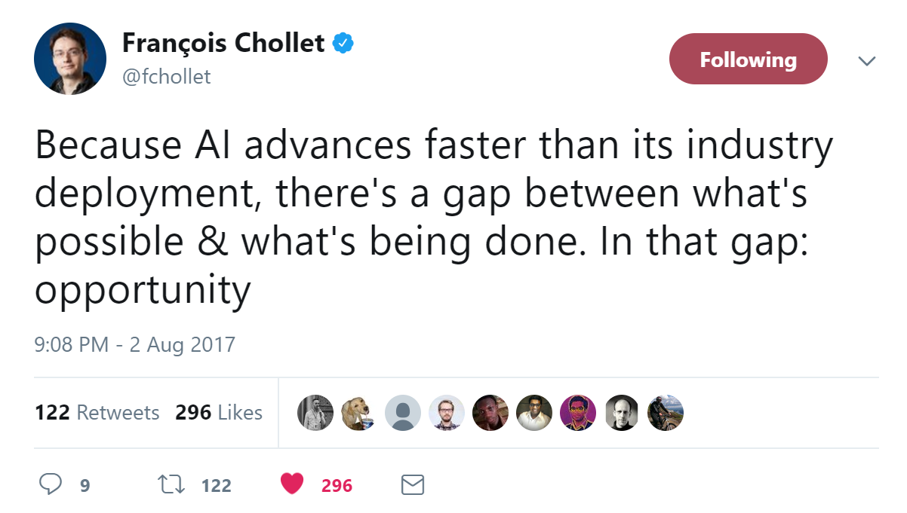
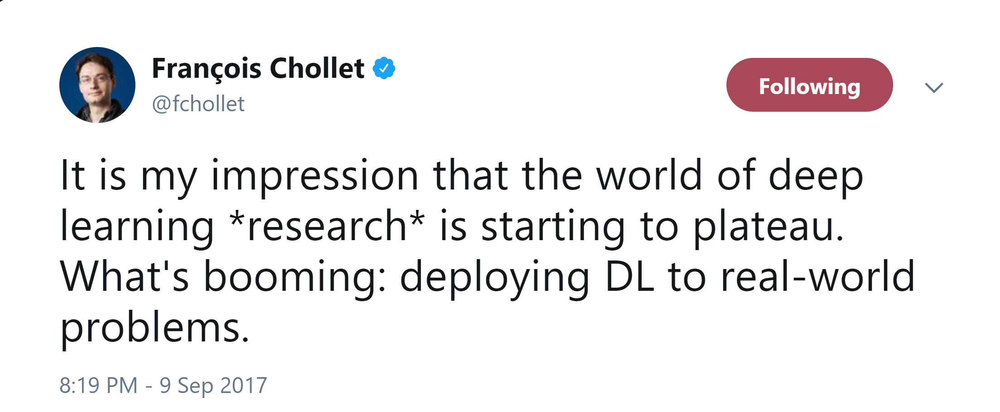

Machine Learning from Idea to Production
or Machine Learning is the new punk
Keynote, Big Data Conference Vilnius, November 2018
Oliver Zeigermann / @DJCordhose
AI (Artificial Intelligence) / ML (Machine Learning) is Opportunity
Was macht Machine Learning aus?
Real World AI is booming
Schachprogramme haben Menschen überwunden weil

Cray X-MP
Supercomputer (1982)

Titan 5 im Gamer PC (2017)
Maschinen verstehen Sprache und können sich dazu verhalten

Machine Learning in Google Sheets


Explore finds Correlations, Outliers, etc.
Ganz normal: Textvervollständigung

Die Post testet 2018 selbstfahrende Lieferfahrzeuge
"Sie werden in der Lage sein, dem Zusteller autonom zu folgen - sodass er nicht vor jedem Hauseingang aus- und wieder einsteigen und wenige Meter fahren muss."

http://www.spiegel.de/auto/aktuell/post-testet-selbstfahrende-streetscooter-a-1172300.html
Face Detection
Entsperrt mein Laptop und mein Handy

Nur zwei dieser Bilder sind echte Fotos

https://twitter.com/goodfellow_ian/status/918900712901197824
Die anderen sind mit Neuronalen Netzwerken generiert

Aber so ganz kriegt man den Kunden noch nicht angekleidet

Visually-Aware Fashion Recommendation and Design with Generative Image Models
schnelleres Arbeiten, höherer Durchsatz

Welche Dokumente hat der Kunde eingericht?
Customer Churn / Conversion

Kunde vor und nach Abschluss

Glaskugel
Wie verhält sich jemand, der später Kunde wird / kündigt?
Weitere realistische Anwendungsgebiete
- Recommendation Systems: Spotify und Netflix kennen mich besser als ich mich selbst
- Making decisions: Sollte jemand einen Kredit bekommen oder versichert werden?
- Fraud Detection: Sieht eine Kredit-Karten-Transaktion oder eine Steuererklärung ungewöhnlich aus?
- Predictive Maintenance: KI Systeme sagen wann man ein Wasserrohr ersetzen soll bevor es bricht
- Expert System: Zuordnung von Krankheit und Maßnahmen
Selbstfahrende Autos
Was passiert in Situation in denen ein tötlicher Unfall nicht zu vermeiden ist?
Wen soll ein selbstfahrendes Fahrzeug opfern?
Ethik-Kommission zum autonomen Fahren lehnt eine Abwägung zum Wert von Menschen ab ( http://www.taz.de/Autonomes-Fahren-und-seine-Hindernisse/!5470265/)
Aber würdet ihr ein Auto fahren, dass euch selbst opfern würde? Halten Hersteller das ein?
Moral Machine
Muss man wieder Kant lesen? https://de.wikipedia.org/wiki/Kritik_der_praktischen_Vernunft
Zusammenfassung
- Wenn du strukturierte Daten herumliegen hast, sind diese möglicherweise ein großer Schatz
- Machine Learning kann bei bestehenden Daten von diesen abstrahieren und generalisieren
- Durchdringen der Domäne nur für die Datenanalyse erforderlich
- Machine Learning ist die Fortsetzung der Digitalisierung
Machine Learning auch für dein Projekt
Oliver Zeigermann / @DJCordhose
http://bit.ly/ml-summit